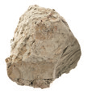
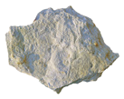
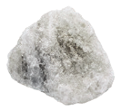
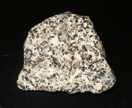
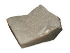
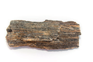

El proceso de formación de las rocas sedimentarias a partir de los sedimentos acumulados se llama litificación. Estas rocas se clasifican en detríticas y no detríticas.
Se forman a partir de fragmentos procedentes de otras rocas. Según el tamaño de esos fragmentos, diferenciamos tres tipos.
Son fragmentos con un tamaño de grano superior a 2 mm.
Tienen un tamaño de grano comprendido entre 0,02 mm y 2 mm.
Sus fragmentos tienen un diámetro inferior a 0,02 mm.
Tienen su origen en los depósitos de sustancias disueltas o de restos de seres vivos. Son de tres tipos.
Se originan a partir del depósito de carbonato de calcio.
Se forman a partir de sales al evaporarse el agua que las contiene.
Resultan de la acumulación de restos de seres vivos.
